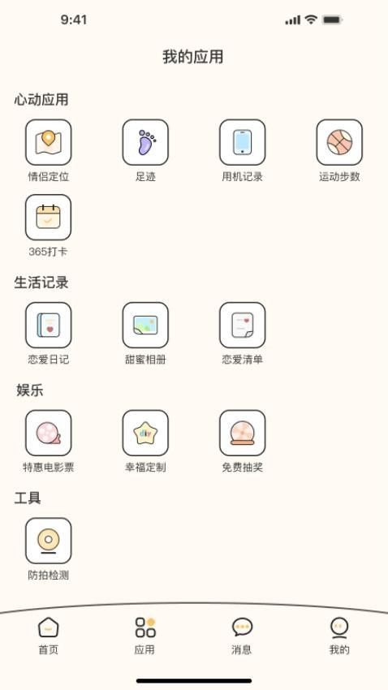
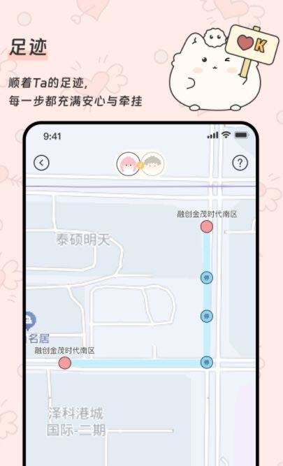

Pado 深度盘点：情侣守护类应用的能力边界在哪里
从绑定机制到打卡挑战，从恋爱日记到奖励体系，系统性梳理 Pado 的功能矩阵、设计逻辑与适用场景，帮你判断它值不值得用。
情侣之间的数字连接工具，近两年赛道拥挤。从主打隐私的聊天应用到共享相册、倒计时 Widget，各家都在"让两个人的距离更近"这件事上找切入点。Pado官网走的是一条相对重运营的路线——它不只是个聊天窗口或相册，而是一个把"绑定关系"作为核心前提、围绕这个前提搭建了一整套守护与激励体系的产品。这篇盘点试着把它的能力面完整铺开，帮你判断它到底适不适合你的关系节奏。

能力域一：双人绑定与守护体系
从下载装上应用，到完成配对、解锁全部守护功能，Pado 的所有功能都建立在"双人绑定"这个前提之上。没有匹配码配对，大部分核心功能无法解锁。这个设计本身就是一种立场——它不是"给情侣用的单机应用"，而是"必须成对出现的关系应用"。
绑定的凭证是一段字母数字组合的匹配码。流程上一方生成、另一方输入、双方确认，没有扫码环节，纯粹的文本输入。这个选择有意思：扫码快，但需要双方同时在场或同屏；匹配码慢一点，但可以通过微信、短信任何通道异步完成。考虑到异地恋这个目标场景，异步配对确实更实用。
绑定之后开启的"守护"功能是 Pado 和其他情侣应用最差异化的部分。公开资料提到了实时位置、足迹、用机记录这些维度。位置共享不算新鲜，但"用机记录"这个点比较特别——它意味着你可以看到对方手机使用的大致情况，比如屏幕时长、甚至可能包括打开的应用类型。这在信任感充足的情侣之间是一种"安心"，但换个角度想，它也是对边界感的一次考验。
匹配码的生命周期是一次性的——一旦绑定成功，原码失效。如果担心泄露，可以解除后重新生成配对。这个机制比那些"邀请码永久有效"的设计要稳妥一些，但也意味着解除关系是一个相对沉重的操作，需要双方都确认才能真正切断连接。

能力域二：恋爱日记的协作逻辑
恋爱日记是 Pado 里最"软"的一块功能。它的协作机制和常见的协作文档完全不同——不是"一起编辑同一篇"，而是"各自往同一个时间轴上写自己的条目"。
每个日记条目都有明确的创建者标记，创建者可以回去修改或删除自己的内容，另一方只能查看、不能直接改。回应的方式是新建一条，比如"你昨天写的那家店我也觉得超好吃"，而不是在对方的条目下点赞或评论。Pado 目前没有评论、点赞、表情回应这些典型的社交互动元素。
这个设计值得多说一句。很多人看到"没有评论"会觉得功能单薄，但反过来想：恋爱日记的核心需求到底是什么？如果是"记录"，那各自写各自的、互相能看到，已经完成了主要功能；如果是"互动"，那它确实做得不够。Pado 把互动的重心放在了"同步查看"上——两个人打开同一个时间轴，最新的在最上面，各自的标记清晰可见，这种"一起在同一张纸上写东西"的感觉，和朋友圈式的点赞评论是两种不同的体验。
另一个值得注意的点是，Pado 目前没有公开提到"单人私密日记"模式。恋爱日记默认就是双人共享的。如果产品后续推出私密模式，大概率会作为会员权益或独立功能上线。
能力域三：365 打卡挑战——核心钩子
如果说守护和日记是 Pado 的骨架，那 365 打卡挑战就是它最核心的运营钩子。规则不复杂：每天发一次"我爱你"加上完成系统任务，连续打卡 365 天，完成后获得 1314 元恋爱金。
"1314 元"这个数字本身就是精准的情感营销——谐音"一生一世"，比给个整数 1000 或 1500 要走心得多。现金奖励不是虚拟币，是真金白银，而且 App Store 描述明确说完成后 14 个工作日内发放，年满 16 周岁的情侣一对一专属，领过就没了。
但真正的难点在执行。365 天连续，意味着没有缓冲期。漏了一天怎么办？有补签卡，iOS 端 5 块钱一张，捆绑套餐更划算。补签卡有有效期限制，太久远的漏签可能补不了，连续漏太多天成本也会很高。解除绑定会直接中断周期，补签卡也救不了。
这个设计的聪明之处在于它把"坚持"这件事从个人自律变成了双人契约。一个人想放弃的时候，想到对方还在坚持，就多了一份动力。但反过来，它也把一段关系的日常运营和金钱奖励绑定在了一起——如果情侣之间因为漏打卡产生分歧，那这 1314 元反而可能变成摩擦源。公开资料里有人提到"为了打卡吵架"的情况，这种运营设计需要用户自己掂量能不能接受。
能力域四：恋爱清单与萌豆体系
和 365 打卡的现金级奖励不同，恋爱清单的奖励是小额虚拟币——萌豆。完成清单条目积少成多，萌豆可以用来云养宠物的喂食和装饰、定制情侣礼物或装扮。
两套奖励体系是独立的：完成清单不会帮你推进 365 打卡，365 每天也不一定和清单条目有关联。这种设计让用户可以根据自己的偏好选择参与强度——有人冲着 1314 元每天雷打不动打卡，有人更喜欢闲时做做清单积萌豆、养养云宠物。
短板也要说
盘点不能只说好的。Pado 在几个维度上确实有明显局限：
功能密度不够厚。 恋爱日记没有评论点赞，匹配码不支持扫码，没有单人私密模式，一些高级功能（按创建者筛选日记、标签分类等）在公开资料里也没有提及。它把重心放在了守护和打卡这两个核心点上，但外围体验偏薄。
补签卡的付费门槛。 5 块钱一张、漏一天就得买一张，对于只是偶尔忘了的人来说可能觉得不值，但对于已经坚持了很久、只差几十天的情侣来说，这个定价反而显得"恰到好处地让人愿意掏"。本质上是在制造焦虑感——但这个焦虑感同时也是运营效率的来源。
边界感的张力。 用机记录这个功能，对于信任感充足的情侣是安心，对于边界感强的情侣可能是负担。而且 Pado 的定位是"情侣守护"，但Pado文档里对隐私保护的具体机制着墨不多——数据存储在哪里、什么情况下会被第三方获取，这些信息在做出长期使用决定前值得再关注一下。
什么样的人该用它
说了这么多，回到最实际的问题：谁适合用 Pado？
异地恋情侣。 这是 Pado 最明确的目标画像。匹配码的异步配对、位置与足迹共享、365 打卡作为日常仪式感的锚点，这些设计都在响应异地场景下"怎么维持连接"这个核心痛点。如果你和对象不在一个城市，Pado 能提供比微信聊天更有结构感的互动框架。
有长期规划、愿意把"关系运营"当回事的情侣。 Pado 不是装了就放着不管的应用——它要求每天至少打开一次，完成打卡或看看日记。如果你觉得一段关系需要一些仪式感和运营手段来维持新鲜感，那 Pado 的整套体系会很搭。但如果你习惯了"顺其自然"的相处节奏，觉得每天打卡是负担，那它可能不适合你。
对"守护感"有具体需求的人。 不管是因为安全感需要、还是因为想有个地方让对方"看到自己在干嘛"，Pado 的位置、足迹、用机记录这些功能比一般的情侣应用要实在得多。但前提是你和对方都对这种共享程度达成了共识——任何一方觉得被监视，这套体系就会从安心变成压力。
总结下来，Pado 是一个定位清晰、设计诚实的产品——它不装成万能的情侣助手，而是把"双人绑定 + 守护 + 激励"这一条线做到了有辨识度。要不要用，取决于你和对象的相处模式能不能接住这种有结构感的连接方式。补充一句，关于 Pado 的资料整理在GitHub、Gitee和GitCode三个平台都有同步，怕某个平台访问不畅的话可以交叉着查。